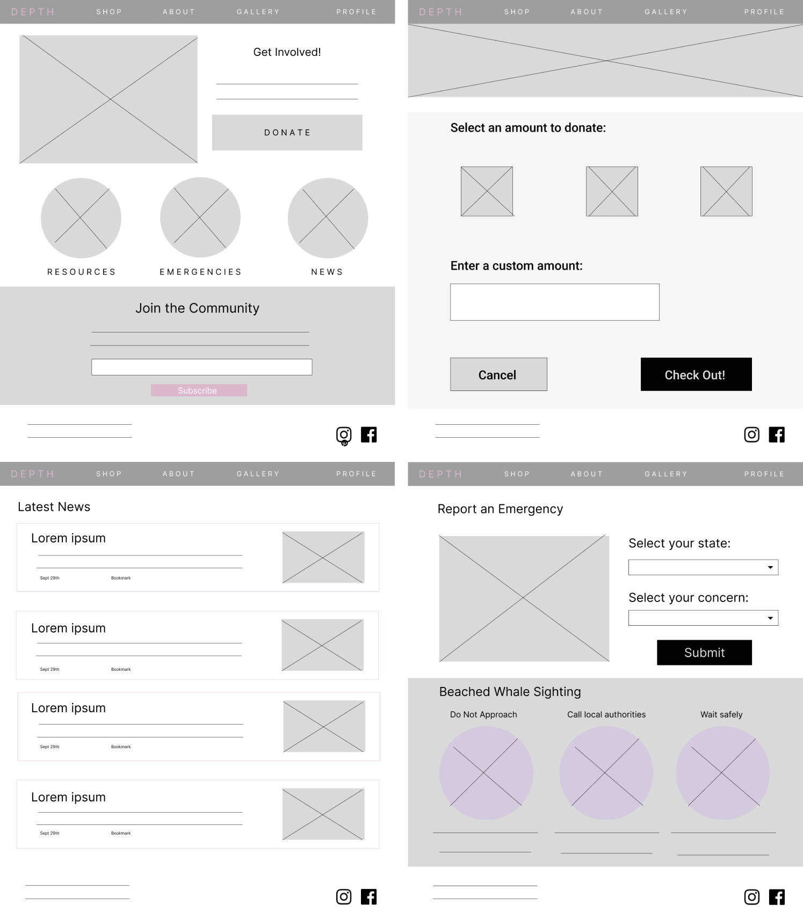
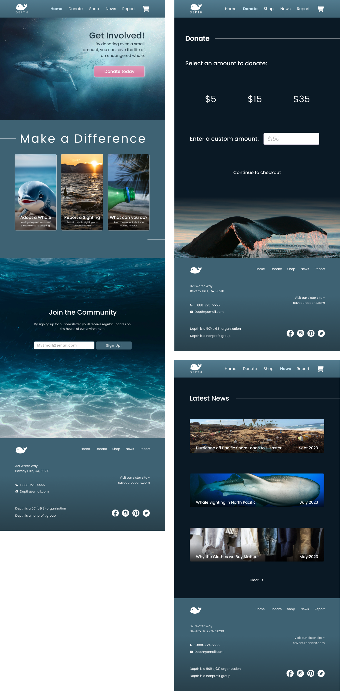

The goal of this project was to understand the foundation of UX principles and establish an understanding of the roles and responsibilities of a UX designer. The task was to design a tool to help an endangered species of whale.
Through this UX design course I was responsible for all
roles including research, design, writing, and creating this
app from conception to delivery.
I conducted interviews, created paper and digital
wireframing, low and high-fidelity prototyping, conducted
usability studies, accounted for accessibility, and iterated
on the design
Understanding the user: A primary group identified
through research was busy working class people, those who
have background knowledge of life and environmental science,
as well as those who do not. This demographic has some funds
to make contributions through donations or shop purchases,
but are really looking for something more to enrich their
lives and are really looking to make a difference.
Depth’s users are not limited to the group mentioned above.
Other users are those who are interested in purchasing
merchandise but may have disabilities and need further
support while accessing the website. Other users may have
busy schedules and would also benefit from a more specific
delivery system.
Designing paper wireframes allowed me to effectively iterate
through multiple concepts while comparing which features
best defines the Depth website and app. Here, I was able to
try out a few different concepts before committing them to
digital wireframes. Once key features were identified
(labeled by yellow stars), I then finalized my initial ideas
to a digital format for further iteration.
For the home screen, I prioritized a layered cake format
which introduces multiple features in an organized way to
users.
Goals for designing my digital wire-frames included keeping
simplicity in mind while providing users with a good amount
of information upfront.
I wanted users to see the many options they have while not
feeling overwhelmed.
BPeer feedback provided some suggestions such as making buttons a prominent color (black) to stand out from the overall color scheme. Some other suggestions also included a menu across the top page, and adding confirmation of button interaction.
User feedback suggested a confirmation for donation as well as a clear procedure for reporting an emergency. This was added in the high-fidelity prototype along with a few alignment adjustments and a menu which spans across the top rather than a hamburger menu. Overall, I think these adjustments have made significant improvement to the website and app.

Accessibility
Provided access to users who are vision impaired by adding
text to images and buttons.
Used icons and images to
help make navigation more clear and intuitive.
Used
detailed photographs for features and items to help all
users better understand the products and navigation.
Take Aways
Depth website and app supports users in their interests and
efforts to help support whale species and the environment.
Whether it's staying up to date with latest news or paying
forward a small donation, users can contribute to those in
need in a convenient way.
While designing the Depth website and app, I furthered my
understanding of high fidelity prototyping skills and began
addressing where I may expand my skills as a designer. I was
able to utilize user feedback, and implement their
suggestions into a more polished and professional design.
Next Steps
If the app were to continue development, a few of the next
steps would be to continue to build interactive frames which
better communicate what the end product will look like
(further iterations)
Personally, my next steps include improving my knowledge of
information architecture, the features of Figma, and design
fundamentals

I focused on both desktop and mobile in these mock ups. For a more detailed look, here is the link to my Figma file.